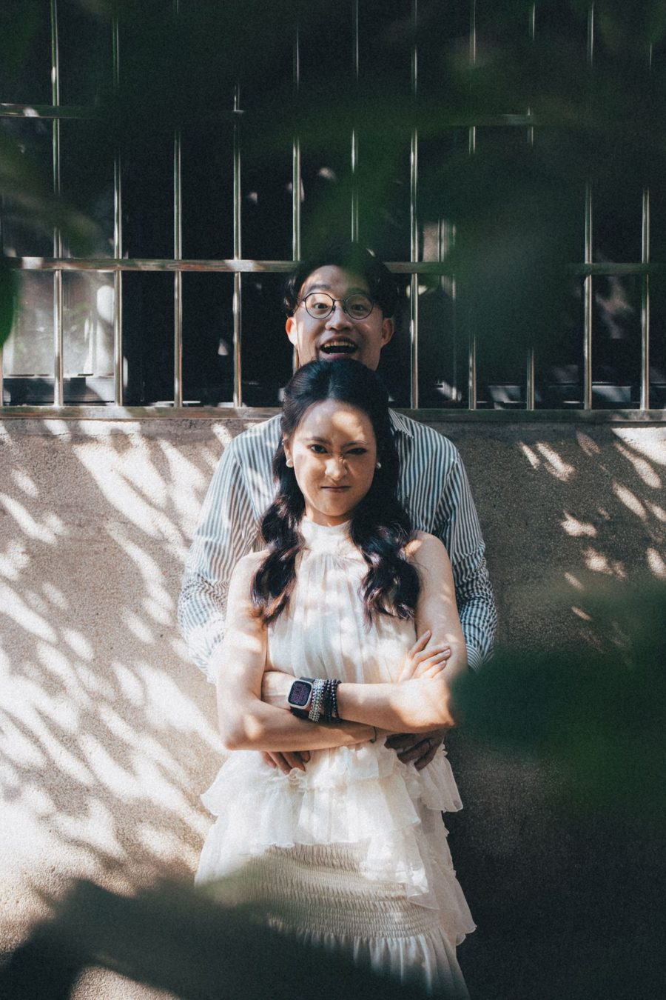

WEDDING BANQUET · 婚宴邀請 · 2027.05.15 CAN
one leap across the sky, to celebrate with you
十萬八千里。
羊城见喜
Harry 與千條結婚了。
這一天，想請你在我們身邊。
Harry & 千條 敬邀

命運自有地圖
而我們尋路至此
fate keeps its own map — and we found our way here
今日攜手，踏上全新冒險——
不怕迷路，不必完美，但求盡興；
風雨同舟，歲月無驚，山海慢慢。
以勇氣、篤定、責任，
兌換更廣闊的世界，與更大的自由。
CAI → TYO → CAN
Hand in hand, a new adventure — unafraid of getting lost, no need to be perfect, only to enjoy it all.
FROM THE WIDE WORLD · BACK TO THE TABLE
翻山越海，
回到三餐四時
九千公里走過，最後落腳的，是一張飯桌。
after all the mountains and seas, we came home to the everyday



春櫻花落得慢，
賽車跑得快。Petals fall slowly. Race cars don’t.
賽車跑得快。Petals fall slowly. Race cars don’t.
夏北回歸線上，
一邊烈日，一邊驟雨。Blazing sun on one side, sudden rain on the other.
一邊烈日，一邊驟雨。Blazing sun on one side, sudden rain on the other.
秋晨踏古道青苔，
夜穿鋼鐵森林。Mossy steps by morning, steel forest by night.
夜穿鋼鐵森林。Mossy steps by morning, steel forest by night.
冬雪落在野外，燈亮在桌前。
從此，我們是家人。Snow outside, a lamp within. From then on, family.
從此，我們是家人。Snow outside, a lamp within. From then on, family.
我們在路上遇見彼此，
也一路有你們見證。
五月十五，請來聚氣同歡。
We met on the road, and you were there for it.
Harry & 千條 敬邀
2027.05.15 · 廣州